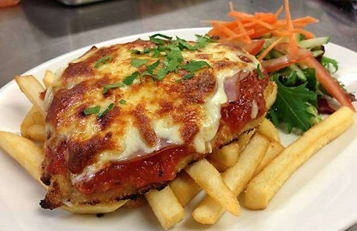

Parmegiana

Descrição
Como fazer um delicioso frango a parmegiana.
Ingredientes
- 3 unidades de filé de frango
- pimenta do reino a gosto
- orégano a gosto
- sal a gosto
- 2 unidades de ovos
- 1/2 xícara (chá) de farinha de trigo
- 1/2 xícara (chá) de farinha de rosca
- 1 sachê de molho de tomate (340g)
- 150 g de mussarela (fatiada)
Passo a passo
- Em uma tigela, tempere os filés com pimenta do reino, orégano e sal;
- Deixe descansar por 10 minutinho para pegar bem o sabor do tempero;
- Em seguida passe os filés em 2 ovos ligeiramente batidos, temperado com 1 pitadinha de sal;
- Depois passe os filés na farinha de trigo;
- Passe novamente nos ovos batidos;
- Por último, passe na farinha de rosca;
- Leve os filés empanados para fritar no óleo quente, em fogo médio, até dourar;
- Transfira-os para um prato forrado com papel toalha e reserve;
- Em uma travessa pequena, espalhe uma camada de molho de tomate;
- Em seguida acomode os filés;
- Cubra-os com o restante do molho, espalhando bem;
- Depois faça uma camada de mussarela por cima de tudo;
- DICA: quem quiser, pode colocar uma camada de presunto por baixo da mussarela. Fica muito gostoso.
- Leve ao forno pré aquecido, 180ºC, por 15 minutos ou até gratinar.
Voltar